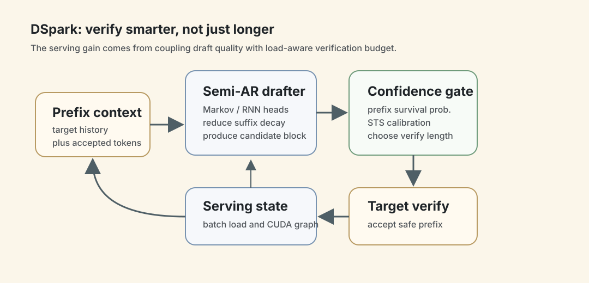
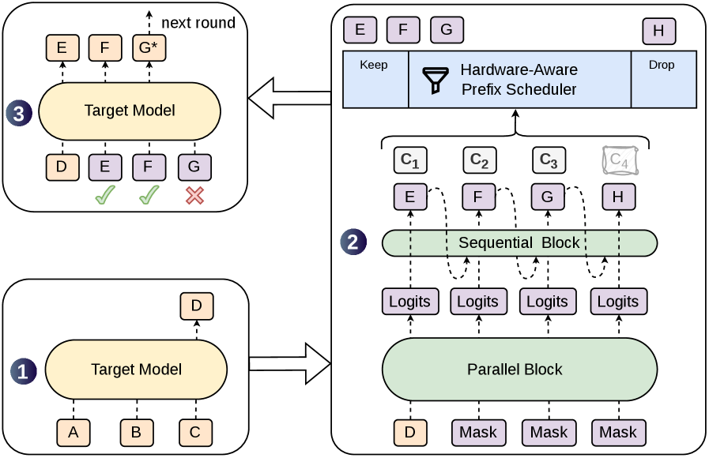
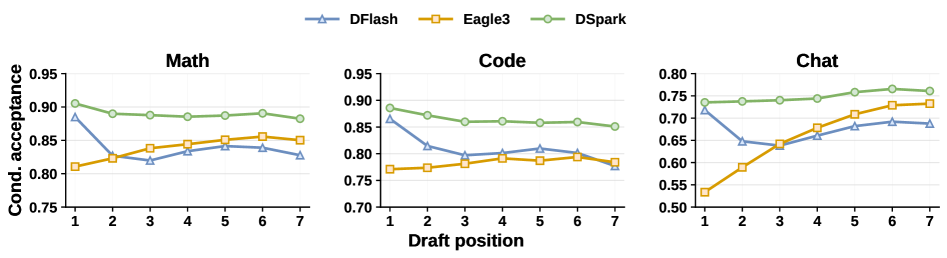
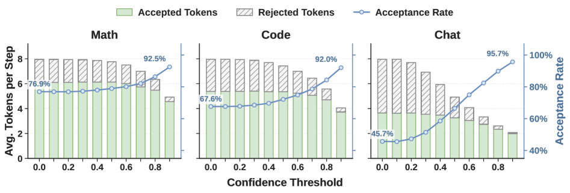
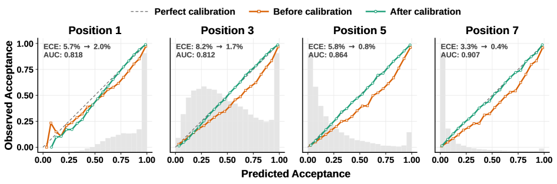
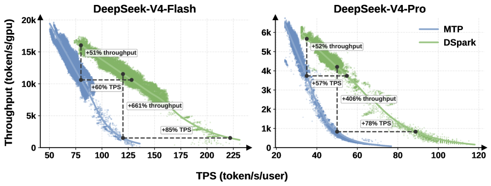
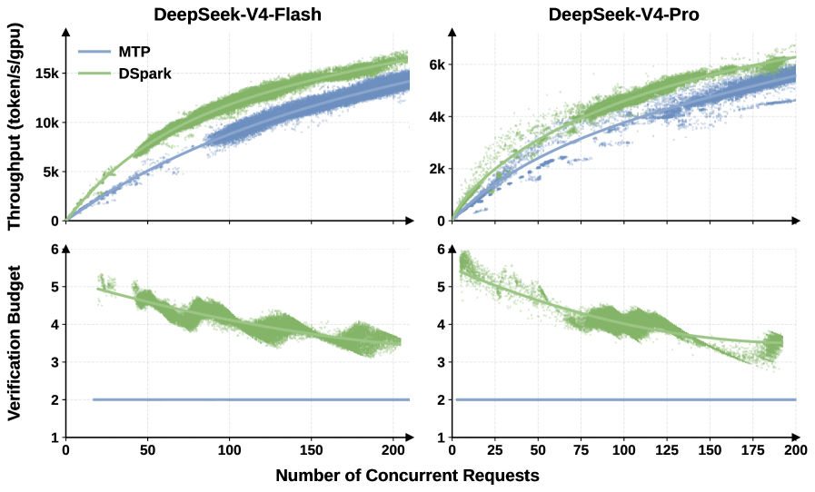

DSpark：speculative decoding 的重点从“多猜 token”变成“猜得连贯，验得聪明”
- Paper: DSpark: Confidence-Scheduled Speculative Decoding with Semi-Autoregressive Generation
- arXiv: 2607.05147
- Submitted: 2026-07-06
- Authors: Xin Cheng, Xingkai Yu, Chenze Shao, Jiashi Li, Yunfan Xiong, et al.
- Affiliations: Peking University, DeepSeek-AI
- Code / artifact: deepseek-ai/DeepSpec
- 类型: 推理加速 / speculative decoding / production serving system
- 关键词: speculative decoding, semi-autoregressive generation, confidence-scheduled verification, DeepSeek-V4, MTP, accepted length, prefix scheduler, online serving
读法：给人和 agent 的路标
这篇不要按“又一个 speculative decoding 方法”读，要按 draft quality + serving scheduler co-design 读。快速路线是：先看 Figure 1 抓住 DSpark 的 decoding cycle；再看 Figure 2 理解为什么纯 parallel drafter 会 suffix decay；然后看 Figure 5/6 里的 confidence head 是否能筛掉低价值 token；最后看 Figure 7/8 判断它在线上 serving 里到底有没有把吞吐和用户侧速度的 Pareto frontier 往外推。
给 agent 以后检索时，关键词是：DSpark、semi-autoregressive drafter、Markov head、RNN head、confidence head、prefix survival probability、Sequential Temperature Scaling、Hardware-Aware Prefix Scheduler、DeepSeek-V4-Flash、DeepSeek-V4-Pro、MTP-1。
一句话判断
DSpark 的核心贡献不是单纯把 draft block 做长，而是把 speculative decoding 里的两个瓶颈同时处理掉：用 半自回归 drafter 修纯并行生成的 suffix decay，用 confidence-scheduled verification 在高并发 serving 里避免把 target model batch capacity 浪费在大概率会被拒绝的 suffix token 上。
这篇对我最有价值的点是：它把“模型推理加速”讲成了一个系统问题。离线 accepted length 更高只是第一步，真正上线时还要知道当前 batch/load 下多验一个 token 是否值得。换句话说，speculative decoding 的收益不只由模型质量决定，还由 scheduler、校准、CUDA graph/ZOS 约束、variable-length kernel 和线上 traffic 共同决定。
图表优先读法
| 先看 | 图/表 | 读完应该抓住什么 |
|---|---|---|
| 1 | Figure 1：architecture | DSpark = semi-autoregressive drafter + confidence head + hardware-aware prefix scheduler |
| 2 | Figure 2 / 5 | suffix decay 和 confidence threshold 是它解决的两个核心机制问题 |
| 3 | Figure 6 | confidence raw score 需要校准，否则 scheduler 会高估接受概率 |
| 4 | Figure 7 / 8 | 真正的上线收益要看 throughput-interactivity frontier 和 load-adaptive budget |
| 5 | 实验表 | 离线 accepted length、线上吞吐、延迟约束要一起读 |

这张自制图用 serving loop 的视角重画 DSpark：semi-autoregressive drafter 先解决后缀质量，confidence gate 再估计 prefix survival probability，scheduler 根据系统负载决定值得验证多长。这样后面的 Figure 1/5/6/7/8 可以连成一条线：不是“多猜 token”，而是“在硬件和流量约束下更聪明地验证”。
1. 它想做什么
LLM 自回归生成时每个 token 都要跑一次 target model，所以用户感知延迟随输出长度增长。Speculative decoding 的基本思路是：用轻量 draft model 先猜一段 token，再让 target model 一次并行验证这段 prefix；只要接受规则保持 target distribution 不变，就能在不损质量的前提下加速。
论文把速度写成一个很有用的式子：
\[L = \frac{T_{\text{draft}} + T_{\text{verify}}}{\tau}\]其中 L 是平均每个生成 token 的延迟，T_draft 是 draft 生成耗时，T_verify 是 target model 验证耗时，\tau 是每轮被接受的 token 数。所有 speculative decoding 方法基本都在动这三个杠杆：
- draft 更快：降低
T_draft； - draft 更准：提高
\tau； - 验证更聪明：减少无效的
T_verify。
DSpark 的定位是同时动后两个杠杆：让长 draft block 的后半段更连贯，并且只验证当前系统负载下“值得验证”的 prefix。
2. 当前做法卡在哪
已有 drafter 大体有两类。
| Drafter 类型 | 怎么工作 | 优点 | 问题 |
|---|---|---|---|
| Autoregressive drafter | draft token 一个个生成，每个位置依赖前面已采样 token | 序列连贯，后缀质量稳定 | T_draft 随 block size 线性增长，只能用短 block 和浅模型 |
| Parallel drafter | 一次 forward 同时生成所有 draft positions | T_draft 基本不随 block size 增长，可以用更深模型和更长 block |
每个位置不看已采样前缀，容易把不同合理续写混在一起，后面 token 接受率快速衰减 |
论文用一个很直观的例子解释 pure parallel 的问题：上下文可能接 “of course” 或 “no problem”，但并行位置各自边缘化所有可能前缀，就可能拼出 “of problem” 或 “no course”。这就是 suffix decay 的来源：第一个 token 可能很好，后面的 token 因为没条件化在真实采样前缀上，越来越容易被 target model 拒绝。
第二个瓶颈更系统：parallel drafter 很容易生成长 block，但 生成出来不等于应该全部验证。在低负载时，多验几个 token 的机会成本小；在高并发时，多验一个低 confidence token 就会占用 target model batch capacity，挤掉其他请求。
所以 DSpark 的问题定义可以写成：
不要只问 draft 能不能一次多猜几个 token。
要问：这些 token 是否连贯？是否会被接受？在当前 serving 负载下是否值得验证？
3. 方法机制
3.1 总览图：parallel backbone + sequential head + prefix scheduler

Figure 1 是整篇最重要的图。给定 prompt tokens ABC，target model 先生成一个 token D，这个 token 成为本轮 drafting 的 anchor。DSpark 用较重的 parallel backbone 和很轻的 sequential head 生成候选 EFGH，同时输出每个位置的 confidence c1 到 c4。Hardware-Aware Prefix Scheduler 根据 confidence 和系统吞吐曲线只保留 prefix EFG，丢掉低 confidence 的 H。最后 target model 并行验证 EFG，图中 E 和 F 被接受，G 被拒绝，于是 target model 生成修正 token G*。
这张图里有三个关键设计：
- parallel backbone 负责吞吐：重计算部分仍然一次 forward 出整段 hidden/logits。
- sequential head 负责局部依赖：只在输出头附近加轻量顺序依赖，避免把整个 drafter 变回慢的自回归模型。
- prefix scheduler 负责验证预算：不是所有 draft token 都进入 target verification。
3.2 Semi-autoregressive generation
DSpark 在 parallel backbone 之后加一个轻量 sequential stage。它把 block 内的联合分布写成自回归分解：
\[P\left(X \mid x_0\right) = \prod_{k=1}^{\gamma} p_k\left(x_k \mid x_0, x_{<k}\right)\]这里 x0 是上一轮 target model 给出的 anchor token，\gamma 是 draft block 长度。parallel backbone 先给每个位置一个 base logits Uk；sequential head 再加一个 prefix-dependent transition bias Bk，让第 k 个 draft token 可以看见前面已经采样出的 token。
论文实现了两个 sequential head：
| Head | 机制 | 论文结论 |
|---|---|---|
| Markov head | 只依赖前一个 token，用低秩转移矩阵近似 V x V 词表转移 |
默认选择，部署简单，收益足够好 |
| RNN head | 维护 block 内 recurrent state，能访问更长 prefix history | 长 proposal 下略有增益，但复杂度和部署性质不如 Markov head |
这个设计的 taste 很清楚：把自回归只加在最便宜的位置。它不让整个 drafter 逐 token 跑 transformer，而是只在 logits correction 上加入局部顺序信息。
3.3 Confidence head：估计“这个 prefix 活下去的概率”
DSpark 的 confidence head 对每个 draft position 输出 ck，表示在前面 token 都被接受的条件下，第 k 个 token 能通过 target verification 的概率。监督信号来自 draft distribution 和 target distribution 的 total variation distance：
这个公式的意义是：draft 分布越接近 target 分布，token 被 speculative acceptance 接受的概率越高。
但 scheduler 需要的不只是排序，还需要概率值本身比较准，因为它要估算“多验一个 token 带来的 expected accepted tokens”。所以论文又做了 Sequential Temperature Scaling, STS：从左到右校准 prefix survival probability，让累计乘积更接近真实接受率。
3.4 Hardware-Aware Prefix Scheduler
对于 batch 里的 R 个 active requests，request r 的第 j 个 prefix survival probability 是：
如果给 request r 分配 verification length ell_r，target model 本轮要处理的 verification batch size 是所有请求的 1 + ell_r 之和；其中 1 对应 target model 自己的 bonus/current token。论文用 SPS(B) 表示 engine 在 batch size B 下的 steps per second，这条曲线在 engine 初始化时 profile 一次。scheduler 的目标是最大化：
这里 tau 是系统级 expected accepted tokens。直觉是：多加一个 verification token 会提高 expected accepted tokens，但也会让 batch size 变大，从而可能降低每秒 step 数。scheduler 就是在这两者之间找收益为正的位置。
算法上，DSpark 把所有候选 prefix extensions 按 a_{r,j} 从高到低排序，然后沿着这条 greedy admission path 逐个加入，查 SPS(B) 更新 Theta。理论版本里有一个早停条件：一旦 throughput 不再变好就停。这个早停不只是优化速度，它还关系到 lossless speculative decoding 的非预见性要求：是否验证第 k 个 token，不能依赖第 k 个 token 采样出来之后才知道的信息。
附录 A 给了一个很好的反例：如果 scheduler 事后看了未来 token 的 confidence，再决定是否 admission 第一个 token，就会偏向那些导向高 confidence continuation 的 token，输出分布会从 target distribution 偏移。论文用一个二元词表例子展示，target 是 (0.7, 0.3)，错误 scheduler 会变成 (0.85, 0.15)。所以这里的 correctness 不是小细节，而是 speculative decoding “不改模型分布”的底线。
3.5 生产部署里的改造
理论 scheduler 假设 SPS(B) 平滑、单峰，但真实 GPU/serving 系统不是这样。论文在 DeepSeek-V4 部署里做了几个工程改造：
- 异步调度：为了兼容 Zero-Overhead Scheduling，使用两步之前的 confidence 预测 upcoming verification capacity，避免同步 scheduler 卡住 GPU pipeline。
- 动态 top-K admission：当前 step 的候选 token 仍按最新累计 confidence 排序，历史预测只用来确定容量上限。
- 避开 jagged SPS cliffs：生产版移除理论算法的 break，通过异步两步延迟形成 causal barrier，避免当前 token 信息泄漏。
- variable-length verification kernel：把不同 request 的待验 token flatten 成独立元素，用 marker tensor 表达 intra-sequence dependency，避免 padding 造成 GPU 利用率下降。
这部分很重要，因为它说明 DSpark 不是“论文算法直接上线”，而是 algorithm 和 serving infrastructure 互相迁就之后的版本。
4. 实验和证据
4.1 Offline：draft quality 是否真的变好
离线实验为了隔离 draft quality，关闭 confidence scheduler，强制所有 drafter 都验证固定长度。评测 target models 包括 Qwen3-4B/8B/14B 和 Gemma4-12B；baseline 是 autoregressive drafter Eagle3 和 parallel drafter DFlash。训练数据是 Open-PerfectBlend 的 1.3M prompts，responses 由各 target model 重新生成，每个 drafter 训练 10 epochs。
主指标是每轮 accepted length tau，越高越好。
| Target model | Eagle3 avg tau |
DFlash avg tau |
DSpark avg tau |
DSpark vs Eagle3 | DSpark vs DFlash |
|---|---|---|---|---|---|
| Qwen3-4B | 3.61 | 4.06 | 4.73 | +30.9% | +16.3% |
| Qwen3-8B | 3.80 | 4.07 | 4.81 | +26.7% | +18.4% |
| Qwen3-14B | 3.68 | 4.04 | 4.78 | +30.0% | +18.3% |
| Gemma4-12B | 4.38 | 4.02 | 4.66 | +6.6% | +16.1% |
论文还强调 domain effect：以 Qwen3-4B 为例，DSpark 在 math/code/chat 上的 accepted length 平均约为 5.57 / 5.12 / 3.49。结构化任务更容易预测，open-ended chat 更容易拒绝后缀。这正是为什么 fixed verification length 会浪费。
4.2 Figure 2：为什么纯 parallel 会 suffix decay

Figure 2 不是看 prefix survival，而是看 position-wise conditional acceptance：只有前面 token 已经全部被接受时，才统计第 k 个 token 是否被接受。这样能隔离每个位置自身的预测质量。
图里最值得看的是三条曲线的形状：
- Eagle3：自回归 drafter 的后面位置稳定或上升，因为它真的看见了已采样 prefix。
- DFlash：第一个位置很强，但后续位置下降，尤其 chat 更明显，这就是 pure parallel 的 suffix decay。
- DSpark：保留了 parallel backbone 的第一个位置优势，同时用 sequential head 缓解后缀衰减。
论文给出的具体例子也很有解释力：Qwen3-4B 上，DFlash 在 Math 第一个位置约 0.88，Eagle3 约 0.81；Chat 上 DFlash 第一个位置约 0.72，Eagle3 约 0.53。因为 speculative decoding 是 prefix survival，第一个 token 权重特别大，所以 parallel drafter 即使后面会 decay，也可能在全局 accepted length 上超过自回归 drafter。DSpark 要做的是保留这个初始优势，同时补后面的依赖。
4.3 Figure 5/6：confidence 是否能用于 verification pruning

Figure 5 做的是 static threshold sweep。threshold 为 0 时相当于 fixed-length verification；threshold 越高，低 confidence suffix 越多被剪掉。
最该记的数字：
- Math acceptance rate 从 76.9% 升到 92.5%。
- Code acceptance rate 从 67.6% 升到 92.0%。
- Chat acceptance rate 从 45.7% 升到 95.7%，剪枝最明显。
这说明 confidence head 至少能识别哪些 suffix token 大概率会被拒绝。注意这里不是说阈值越高越好，因为剪得太狠会减少 accepted tokens；它只是证明 confidence signal 可用。

Figure 6 看校准。raw confidence 有较强区分能力，ROC-AUC 约 0.81 到 0.90，但会过度自信，ECE 约 3% 到 8%。做了 STS 之后，平均 ECE 降到约 1%。这一步对 hardware-aware scheduler 很关键，因为 scheduler 用的是概率的绝对值，不只是 ranking。
4.4 Online：真正上线后 Pareto frontier 是否变好

Figure 7 是我认为这篇最硬的证据。它不是只报告离线 tau，而是在 DeepSeek-V4-Flash 和 DeepSeek-V4-Pro 的 production serving engines 上，用 live user traffic 采样点画 aggregate throughput 和 per-user generation speed 的 frontier。
对比对象是 MTP-1，论文说它是 DeepSeek-V4-preview 发布后两周被 DSpark 替换掉的 former production baseline。
关键数字：
| Engine | SLA anchor | DSpark 相对 MTP-1 |
|---|---|---|
| V4-Flash | 80 tok/s/user | aggregate throughput +51% |
| V4-Flash | 120 tok/s/user | nominal aggregate throughput +661%，论文提示应理解为 baseline 接近 operational boundary |
| V4-Flash | matched practical throughput | per-user generation speed +60% 到 +85% |
| V4-Pro | 35 tok/s/user | aggregate throughput +52% |
| V4-Pro | 50 tok/s/user | nominal aggregate throughput +406%，同样主要说明 DSpark 能维持 strict SLA 下的可用容量 |
| V4-Pro | matched system capacity | per-user generation speed +57% 到 +78% |
这里要谨慎读：+661% 和 +406% 不是常规“模型快了六倍/四倍”的意思，而是在 baseline 已经退化到很低 concurrency 的严格 SLA 区域，DSpark 还能维持非退化容量。所以论文也明确说这些点更应该理解为 frontier extension，不是代表性倍率。

Figure 8 解释了 Figure 7 为什么成立：在 moderate concurrency 下，scheduler 利用空闲 target compute，把平均 verification budget 从 MTP-1 的静态约 2 tokens 扩到约 4 到 6 tokens；当 concurrency 升高、target capacity 饱和时，它又自动把 verification budget 收回来，避免低 confidence token 占用关键 batch capacity。
这就是 “verify smarter, not longer” 的生产版含义。
5. 成本和复现难度
论文给了训练 recipe，但没有给完整 GPU hours 或训练成本，所以精确复现成本无法直接估算。
可见成本和依赖包括：
- 数据：Open-PerfectBlend 1.3M prompts；只用 prompts，responses 由每个 target model 重新生成。
- 训练轮数：每个 drafter 训练 10 epochs。
- target model：Qwen3-4B/8B/14B、Gemma4-12B 用于离线实验；DeepSeek-V4-Flash/Pro 用于 production deployment。
- 生产 DSpark 配置：maximum block size
gamma=5，Markov head，parallel backbone 是 3 个 MoE layers，带 mHC 和 sliding window attention 128。 - 训练系统优化：hidden state communication 避免传全词表 logits；anchor-bounded sequence packing 降低 draft model 受 context length 的影响。
- serving 系统依赖：需要 profile
SPS(B)，支持动态 prefix verification，支持 variable-length queries，且要和 CUDA graph / ZOS 这类 serving 优化兼容。
我的判断是：方向性复现可以做，精确复现很难。用 DeepSpec 训练一个小 target model 的 DSpark drafter，验证 tau 和 confidence pruning，是可行的；复现 DeepSeek-V4 线上 Pareto frontier，则基本需要 DeepSeek 级别的 serving stack、真实 traffic 和 target model deployment。
6. 我怎么看
可信之处：
- 问题拆得准：论文没有只说 parallel drafter 快，而是指出 parallel 的 suffix decay 和 verification waste 是两个不同层次的问题。
- 证据链完整：offline accepted length、position-wise conditional acceptance、confidence calibration、production telemetry 四层证据能互相支撑。
- 部署细节足够系统：ZOS、CUDA graph、jagged SPS、variable-length kernel、historical confidence 这些都说明作者真的碰过线上 serving 问题。
- 对夸张数字有自我约束：论文主动提醒 +661% / +406% 应解释为 strict SLA 下 frontier extension，而不是普通倍率。
薄弱或需要警惕的地方：
- 线上评测不可完全复现：live user traffic、engine config、baseline 状态都不是公开 benchmark。
- MTP-1 是 production baseline，但不是最强学术 baseline：它说明真实系统里为什么此前保守用单 token setup，但跨系统比较时不能只看这个 baseline。
- accepted length 不是最终体验：离线
tau高不等于线上一定快，真正速度还取决于 engine load、batch capacity、kernel 和 traffic shape。 - confidence scheduler 依赖校准和 profiling：如果 confidence 在分布外失准，或者
SPS(B)在硬件/负载变化下漂移，调度可能不稳。 - 仍有固定 draft-side cost：论文自己承认，对 inherently low acceptance 的复杂 query，先生成完整
gammatoken 的 draft 计算可能收不回来。
7. 对我的价值
这篇对个人 wiki/paper-reading pipeline 也有一个类比：不要只追求“多生成一点”，要按 confidence 和系统负载决定哪些内容值得进入下一轮验证。
可以借三点：
- 分离生成和验证：agent 可以先 draft 很多候选，但不要把所有候选都交给昂贵 verifier。先估计 survival probability，再决定验证预算。
- confidence 必须校准：一个排序信号不够，调度系统需要可比较的概率。对 paper-reading 来说，就是“我有多确定这个数字来自原文”“这张图是否真的支撑结论”要可检查。
- 系统负载也进入策略：空闲时可以多做图、多找引用、多跑检查；忙的时候应该收缩到最有价值的 prefix，例如元信息、关键图、核心数字、build check。
如果把 DSpark 翻译成 paper-reading loop，我会写成：
draft note sections
-> estimate confidence per section
-> verify high-value prefix first
metadata, source links, figures, key numbers, formulas
-> under light load, expand optional analysis
-> under heavy load, stop before low-confidence details burn time
这也是它和之前 DeepSeek-V4 笔记可以连起来的地方：V4 讲百万上下文如何变便宜，DSpark 讲生成阶段如何变快。两者共同指向一个 DeepSeek 的系统 taste：不要只堆模型能力，要把 attention、cache、draft、verification、kernel 和 online scheduler 一起设计。
8. 一句话收束
DSpark 最值得记住的是：speculative decoding 的成熟形态不是“draft model 多猜几个 token”，而是一个 production serving 闭环，draft 要能保留局部依赖，confidence 要能校准，verification 要按硬件曲线和实时负载动态分配，最终目标是把吞吐和用户侧生成速度的 Pareto frontier 一起往外推。